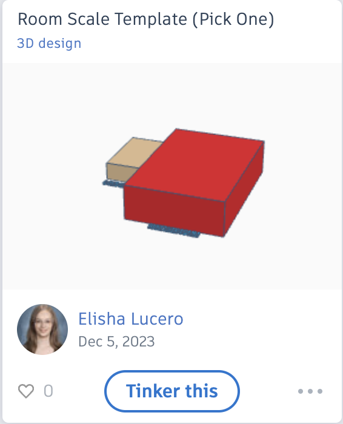

🏠 Dream Room: Determine Scale 🏠
👩💻 Start with the 'Room Scale Template' in Tinkercad 👨💻
Begin your design journey in Tinkercad by finding the "Room Scale Template." Here's how:
- Go to the TinkerCAD activity titled "Design your Dream Room".
- Locate the template "Room Scale Template".
- Select "Copy and Tinker" to start working on your design.

🎥 Learning to Work with Boxes 🎥
Watch this instructional video to learn how to work with boxes in Tinkercad. These skills will be essential for creating the structure of your room:
🛋️ Working with Furniture 🛋️
This video will show you how to create furniture like sofas for your room. Jot down notes to apply these techniques in your Tinkercad design:
🔨 Create Room Objects 🔨
Review this Tips for Creating Room Objects.pdf for ideas and inspiration. This guide offers various images and tips for building different objects in Tinkercad.
🌟 Bringing Your Design to Life 🌟
After watching the example room video, you're ready to start creating your room and its contents. Remember, the video is for reference; express your unique ideas creatively in Tinkercad!
Your teacher will provide instructions on how to share your Tinkercad file once your design is complete.
The Extrusion Tool
🌐 Downloading 3D Files for Tinkercad 🌐
Expand your Tinkercad project with cool 3D models! Here's how you can download them:
- Visit free3d.com to explore a variety of free 3D files.
- Choose a model you like. Remember, it must be in .stl or .obj format.
- Ensure the file size is under 25MB to be compatible with Tinkercad.
- Click to download. The file will usually download as a zip file.
- After downloading, double-click the zip file to open it.
- Drag the .stl or .obj file into your Downloads folder.
Now you're ready to import these files into your Tinkercad project and get creative!
📏 Tinkercad Dream Room Project Rubric 📐
| Learning Outcomes | 4: Advanced/Mastery | 3: Proficient | 2: Satisfactory | 1: Needs Improvement | Student Score |
|---|---|---|---|---|---|
| Used technology or a sketchbook to develop an organized system for drawing ideas and documenting progress. (StyleBoard Presentation) | Consistently and effectively used | Mostly used with minor lapses | Used but not consistently | Rarely or ineffectively used | |
| Developed proportional models based on real measurements. (2 Objects Properly Scaled in TinkerCAD) | Models are accurately proportional | Mostly accurate proportions | Some issues with proportions | Inaccurate proportions | |
| Converted feet/inches to millimeters. (Conversion Sheet) | Accurate conversion | Minor inaccuracies in conversion | Some errors in conversion | Incorrect conversion | |
| Chose an appropriate scale to create room on a Tinkercad workplane. (Used Template) | Appropriately scaled | Mostly appropriate scaling | Some scaling issues | Incorrect scale | |
| Created a 3D room and accessories that are easily identifiable. | Highly detailed and identifiable | Generally identifiable with some detail | Basic identification with limited detail | Lacks identifiable features | |
| Designed a 3D room that can be 3D printed. (Flat Foundation, Avoid Overhangs) | Printable without issues | Mostly printable with minor adjustments needed | Printable with significant adjustments | Not printable | |
| Total score: | |||||